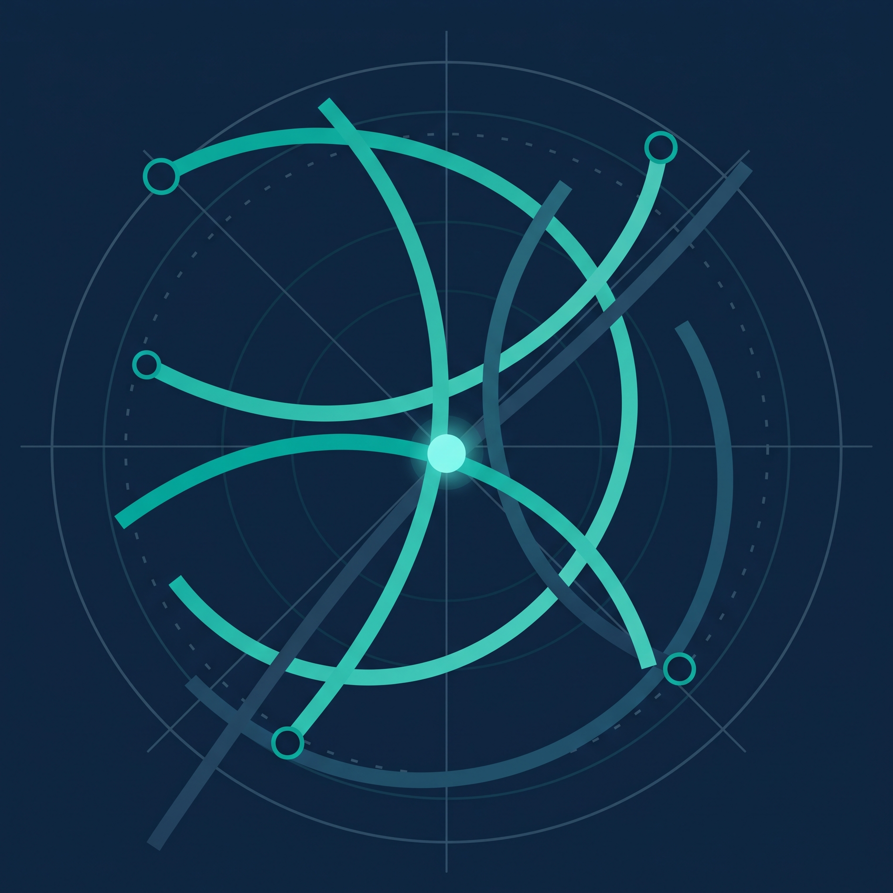
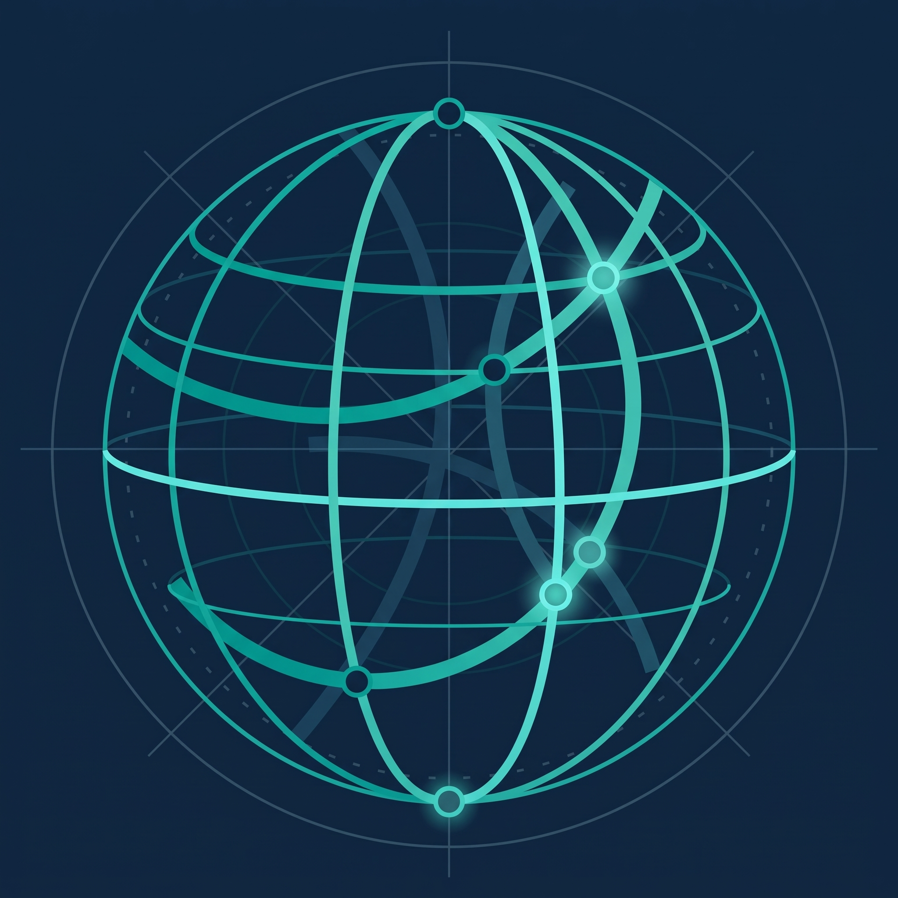

01 / REGULACIÓN
La ley existe, la evidencia técnica, no.
Leyes 21.719 y 21.663 exigen evidencia activa, el riesgo no es solo la sanción: es la exposición reputacional ante incidentes no trazados.
Orquestamos un ecosistema de especialistas certificados con más de 25 años diseñando y perfeccionando infraestructuras críticas y entornos corporativos, transformamos la fragmentación de proveedores y la presión regulatoria en estabilidad operativa comprobable.
Usted conserva el control y la visión directiva, nosotros respondemos por la continuidad y los resultados bajo un solo SLA.


La fragmentación entre múltiples proveedores, integradores y herramientas aisladas diluye la rendición de cuentas, generando vacíos operativos críticos frente a los nuevos marcos regulatorios. Meridio asume el gobierno unificado de su infraestructura, ciberseguridad y cumplimiento bajo un interlocutor único y responsable contractual.
Un modelo de gobierno por capas que articula tecnología, ciberseguridad y cumplimiento normativo frente a las exigencias reales de su operación.
Leyes 21.719 y 21.663 exigen evidencia activa, el riesgo no es solo la sanción: es la exposición reputacional ante incidentes no trazados.
Phishing, ransomware y filtraciones vulneran el correo y accesos principales, se requiere control unificado y visibilidad continua.
Herramientas y accesos dispersos sin control único. Una productividad real necesita identidades y políticas centralizadas.
Meridio actúa como el punto de convergencia entre las metas estratégicas de su organización y la ejecución de especialistas técnicos de primer nivel. Estructuramos un marco de gobernanza riguroso donde gestionamos el ciclo de vida operativo y respondemos formalmente por los resultados bajo acuerdos de nivel de servicio (SLA) vinculantes.
Revisamos qué riesgos tienes, quién responde hoy por ellos y qué evidencia puedes demostrar. Sin acceso a tu operación. Entregable: mapa de riesgos y hoja de ruta priorizada.
Definimos el modelo de responsabilidad: qué hace Meridio, qué hace el ecosistema especializado, con qué SLA y con qué reporte. El cliente firma un contrato de gobierno, no una orden de compra.
Coordinamos a los especialistas técnicos bajo un solo plan y un solo responsable. El cliente no gestiona cinco proveedores: gestiona una conversación con Meridio y su ecosistema.
Comité periódico, reporte ejecutivo, evidencia actualizada y roadmap vivo. Meridio y su ecosistema responden por el resultado, no solo por la ejecución.
Consolidamos las cuatro disciplinas esenciales para la estabilidad del negocio moderno —modernización, ciberseguridad, cumplimiento y operación gestionada— dentro de una arquitectura institucional coherente, auditable y escalable para líderes de tecnología y riesgo.
Planificamos, orquestamos y migramos sus cargas de trabajo hacia entornos híbridos y multinube bajo un esquema de gobernanza financiera (FinOps) y sin impacto en la continuidad operativa del negocio.
Implementamos arquitecturas Zero Trust, detección avanzada mediante SOC/SIEM y esquemas de resiliencia inmutables que salvaguardan la información corporativa y aseguran trazabilidad ante cualquier incidente.
Traducimos los mandatos de las Leyes 21.719 y 21.663 en políticas de seguridad, registros de tratamiento y controles auditables listos para ser sustentados con solvencia ante el regulador o auditorías externas.
Proveemos monitoreo 24/7, soporte especializado de segundo y tercer nivel, junto a la figura directiva de CISO o DPO as a Service, asegurando control riguroso sin sobredimensionar la plantilla interna.
Alineamos la arquitectura corporativa con los estándares internacionales más rigurosos y el marco legislativo chileno vigente, asegurando una postura de seguridad defensiva, trazabilidad documental y mejora continua frente a escrutinios regulatorios.
Marco normativo que impone el principio de responsabilidad proactiva, privacidad desde el diseño, registro obligatorio de actividades de tratamiento (RAT) y sanciones financieras significativas por infracciones de seguridad.
Establece la Agencia Nacional de Ciberseguridad (ANCI) y define obligaciones mandatorias de notificación de incidentes en plazos estrictos de 3 horas para operadores de importancia vital e instituciones esenciales.
Normativa de cumplimiento mandatorio según sector y criticidad del servicio.
Antes de comprometer presupuesto en soluciones aisladas, Meridio le entrega una visión objetiva e independiente de su infraestructura: brechas de seguridad críticas, nivel de apego normativo y un plan de acción a 30, 60 y 90 días ejecutado por especialistas y respaldado bajo nuestro modelo de gobernanza.